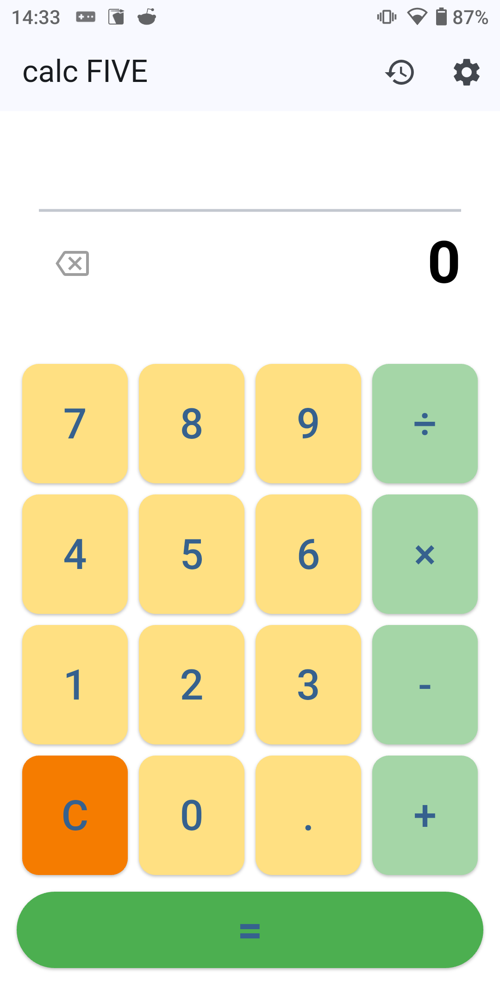
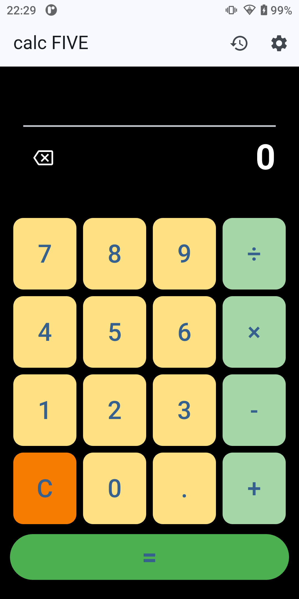
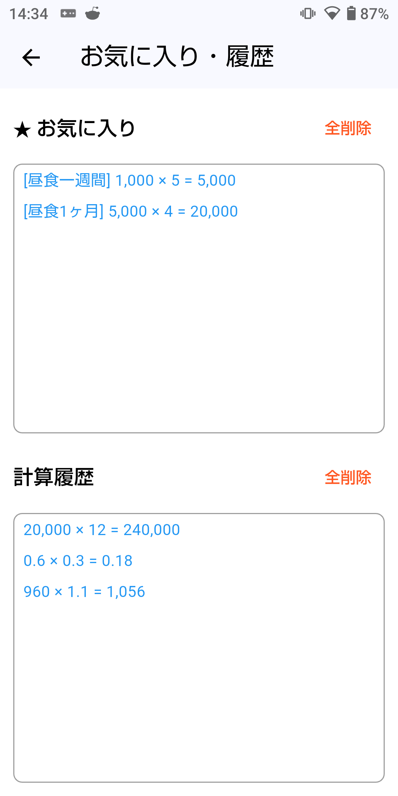

calc FIVE
履歴やお気に入り機能を備えた、 シンプルで使いやすい電卓アプリです。
公開状況：公開予定
アプリについて
calc FIVE は、毎日の計算を快適にすることを目指した電卓アプリです。
シンプルな操作性を大切にしながら、 計算履歴やお気に入りなど、便利な機能を搭載しています。
必要な機能をすぐに使える、 「ちょうどいい電卓」を目指して開発しています。
スクリーンショット



主な機能
- 四則演算
- 計算履歴の保存
- お気に入り登録
- 履歴へのメモ追加
- ダークモード対応
- 日本語⇄英語の切替
ダウンロード
📝 更新履歴
・β版 クローズドテストを開始しました。
テスター参加いただける方はこちらからお願いします。プライバシーポリシー
calc FIVE のプライバシーポリシーはこちらからご確認いただけます。